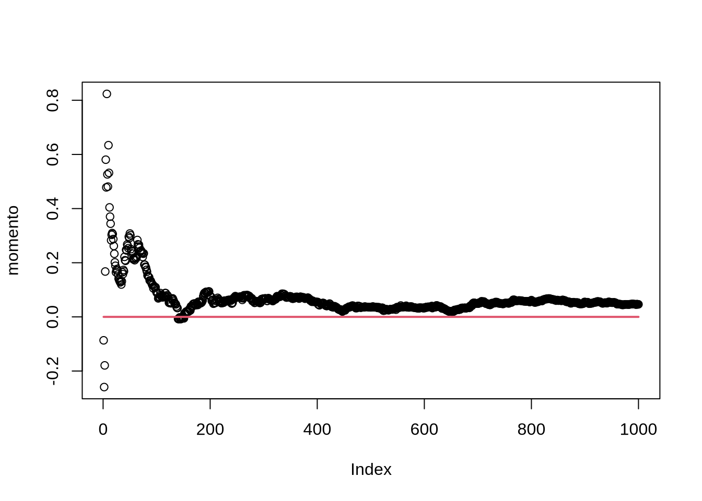

Capítulo 11 Projetinhos
Esse capítulo traz uma série de ideias para serem implementadas no R. Todos os exemplos são da estatística, por enquanto. Propositalmente, o código que resolve o problema está no fim de cada seção. Tente fazer sem olhar. Veja que as soluções propostas não miram o máximo de eficiência possível, mas sim serem o mais claras possíveis. E, como quase tudo na vida, existe mais de uma solução.
11.1 Lei dos Grandes Números
| Dificuldade | Fácil |
| Capítulos necessários | 5 |
Vamos relembrar o que diz a lei dos grandes números. Em linhas gerais, se \(x\) é uma variável aletória com expectância \(\mu\), e \(\bar{X} = \frac{1}{n}\sum_i x_i\), a média amostral, então \(\text{plim}_{n \rightarrow \infty}(\bar{X}) = \mu\) . É isso que justifica, por exemplo, usar estimadores do método dos momentos: se você tem algum momento da distribuição que tem que ser estimado, então o equivalente amostral dele converge para o valor verdadeiro. Vamos colocar isso a prova. Eis aqui um passo a passo do que queremos fazer:
- Gere um vetor de variáveis aleatórias retirados de alguma distribuição, com algum tamanho de amostra (por exemplo,
rnorm(1000)). Vamos chamar esse vetor deamostra. - Crie um vetor de zeros (você pode fazer isso usando
rep(0,1000), que vai gerar um vetor de mil zeros) Chame ele de alguma coisa. No caso, chamarei ele demedia - Crie um loop que faz com que cada posição do vetor
mediaseja a média dos números emamostraaté aquela posição. Assim, se tivermos na 4ª posição demedia, teremos a média dos números daamostrade 1 a 4. - Faça o plot desses pontos para saber se há convergência de fato
amostra <- rnorm(1000)
media <- rep(0,1000)
for(i in 1:1000){
media[i] <- mean(amostra[1:i])
}
plot(media)
lines(1:1000,rep(0,1000), col = 2, lwd = 2) #linha vermelha no valor verdadeiro do parâmetro
Esse é um exemplo básico, mas a ideia é mais poderosa: e se tivermos um momento da forma \(E(xu)=0\), onde x e u são variáveis aleatórias univariadas?11 Se a lei dos grandes números é verdadeira, \(\widehat{E(xu)} = \sum_i x_i u_i\) deve convergir para zero. Vamos testar seguindo a mesma ideia acima. A única diferença é que a nossa média vai ter que ser calculada sem a função padrão mean:
amostra.1 <- rnorm(1000)
amostra.2 <- rnorm(1000)
prod <- amostra.1*amostra.2
momento <- rep(0,1000)
for(i in 1:1000){
momento[i] <- 1/i*sum(prod[1:i])
}
plot(momento)
lines(1:1000,rep(0,1000), col= 2, lwd = 2)
11.2 Mínimos Quadrados Ordinários
| Dificuldade | Intermediário |
| Capítulos necessários | 1, 6, 5 (Só a seção de if) |
O estimador de MQO é o estimador mais fundamental da econometria. Existe mais de uma maneira de derivar ele: podemos ver como um problema de minimização, como fizemos no capítulo 8; aqui, vamos derivar ele a partir da condição de momento \(E(xu) = 0\) para todo x, e onde \(u\) representa o erro. Veja que se fizermos uma matriz \(X\), que tem em cada linha uma observação e em cada coluna uma variável, e \(\mathbf{u}\) o vetor de erros \(n \times{} 1\), \(\mathbf{y}\), o vetor da variável dependente também \(n \times{} 1\), então a condição de momento se torna \(E(X^{'}\mathbf{u})=0\). Se expandirmos isso, usando o fato que \(\mathbf{u} = \mathbf{y}-X\beta\). Então:
\[E(X^{'}\mathbf{u})=E(X^{'}(\mathbf{y}-X\beta))=E(X^{'}\mathbf{y})-E(X^{'}X)\beta = 0 \therefore E(X^{'}\mathbf{y})=E(X^{'}X)\beta \therefore \beta_{OLS} = E(X^{'}X)^{-1}E(X^{'}\mathbf{y})\] Vamos implementar ele no R. Vamos criar uma função que pega a matriz \(X\) e o vetor y e faz a conta para obter o MQO. Precisamos de:
%*%, que multiplica duas matrizes, ou um vetor e uma matrizsolveque inverte a matriztque transpõe a matriz
Com uma meia dúzia de manipulações (trocando o \(y\) do \(\beta_{OLS}\) por \(u\) e fazendo \(\beta \beta^{'}\)), obtemos a expressão para a variância do estimador de OLS:
\[Var(\beta_{OLS}) = (X^{'}X)^{-1}X^{'}DX(X^{'}X)^{-1}\]
Onde \(D\) é uma matriz diagonal cuja as entradas na diagonal são os elementos da diagonal de \(uu^{'}\)12. Então, para obtermos a variância do OLS, precisamos calcular primeiro o resíduo. Vamos criar duas funções: uma para calcular os resíduos, e outra que calcula a variância do \(\beta_{OLS}\). A função que calcula a variância vai chamar a função que calcula os resíduos. Veja que podemos fazer essas funções de várias maneiras: a função que calcula o resíduo pode recber só o X e y e chamar a função mqo para fazer a conta do coeficiente; ou a função pode receber X,y e o coeficiente para calcular o resíduo. Eu vou escolher o segundo caminho:
residuo <- function(x,y,cofs){
u <- y - x%*%cofs
return(u)
}
variancia_mqo <- function(x,y){
cof <- mqo(x,y)
res <- residuo(x,y,cof)
bloco_1 <- solve(t(x)%*%x)
D <- matrix(0,ncol = nrow(x),nrow=nrow(x))
diag(D) <- diag(res%*%t(res)) #diag acessa os elmentos da diagonal da matriz: logo, eu estou contando para o R que os elementos da diagonal de D são os elmentos da diagonal de res*res'
resposta <- bloco_1%*%t(x)%*%D%*%x%*%t(bloco_1)
return(resposta)
}Veja que a função variancia_mqorecebe só \(X\) e y e todo o resto das contas são feitos por funções que criamos originalmente: o coeficiente é calculado pela função mqo, que passa isso para a função residuo, que por sua vez passa o resultado para obtermos a variância do estimador.
Vamos construir uma função final que devolve os coeficientes e o erro padrão. Mais ainda, eu vou adicionar uma mopção que adiciona um intercepto (as funções acima não fazem isso!). Para isso, observe que um intercepto é somente colar uma coluna de 1s na matriz X. Então, na função regressao, eu vou adicionar uma opção intercepto, que vai ser um booleano (verdadeiro ou falso). Se for verdadeiro, eu adiciono uma coluna de 1s. Se você apostou que eu vou fazer isso usando um if, parabéns: é exatamente o que eu vou fazer. Para deixar a coisa mais completa, a função vai ter como padrão adicionar o intercepto:
regressao <- function(x,y,intercepto = T){
if(intercepto == T){
x <- cbind(1,x) #Veja o comentário abaixo
} # como o caso else não faz nada, eu posso simplesmente não colocar nada no else
coefs <- mqo(x,y)
vars <- diag(variancia_mqo(x,y)) #Diag extrai a diagonal da matriz de variância do coeficiente - e é isso que nos interessa
return(cbind(coefs,sqrt(vars)))
}Veja que ao fazer cbind(1,x), o R é inteligente o suficiente para repetir 1 o número de linhas de x, sem termos que nos preocupar em definir um vetor 1 do mesmo número de linhas que a matriz \(X\).Vamos testar a nossa função, comparado com o comando padrão do R, lm:
## [,1] [,2]
## [1,] 0.1479876 0.10669330
## [2,] 1.0856303 0.08981977
## [3,] -0.8327885 0.08729072
## [4,] 1.9488739 0.10540215
## [5,] -2.0157979 0.13226224
## [6,] 0.5108700 0.09746306##
## Call:
## lm(formula = y ~ X)
##
## Residuals:
## Min 1Q Median 3Q Max
## -2.3436 -0.6873 0.1224 0.6271 2.4932
##
## Coefficients:
## Estimate Std. Error t value Pr(>|t|)
## (Intercept) 0.14799 0.10468 1.414 0.161
## X1 1.08563 0.10291 10.549 < 2e-16 ***
## X2 -0.83279 0.10055 -8.283 8.12e-13 ***
## X3 1.94887 0.09865 19.755 < 2e-16 ***
## X4 -2.01580 0.10556 -19.097 < 2e-16 ***
## X5 0.51087 0.09773 5.227 1.04e-06 ***
## ---
## Signif. codes: 0 '***' 0.001 '**' 0.01 '*' 0.05 '.' 0.1 ' ' 1
##
## Residual standard error: 1.029 on 94 degrees of freedom
## Multiple R-squared: 0.9225, Adjusted R-squared: 0.9184
## F-statistic: 223.7 on 5 and 94 DF, p-value: < 2.2e-16Veja que há uma leve diferença entre os erros padrões computados pela minha função e pelo lm. Isso se deve ao fato do R assumir erros homocedásticos e a matriz de variância covariância que nós implementamos não assume isso.
11.3 LASSO
| Dificuldade | Intermediário |
| Capítulos necessários | 8 e 6 (somente para o último passo) |
LASSO (Least Absolute Shrinkage and Selection Operator) é uma maneira de fazer regressão quando temos muitas variáveis e queremos selecionar só as que são relevantes - potencialmente, podemos ter mais variáveis que observações! Formalmente, o LASSO resolve:
\[\beta_{LASSO} = \text{argmin}_\beta \sum_i (y_i - x_i\beta) \text{ sujeito a } \sum_k |\beta_k| < c\] Onde k indexa as variáveis do problema. No fundo, estamos resolvendo o problema de minimização usual de mínimos quadrados, com uma restrição: a soma do valor absoluto dos coeficientes não pode passar de um valor \(c\), que tem que ser determinado13. Veja que, por incrível que pareça, o fato de usarmos o valor absoluto é bastante importante: usar uma restrição com a soma dos quadrados reduz os coeficientes, mas não joga nenhum deles para zero. Uma explicação bastante intuitiva sobre o porque usar o valor absoluto e mais sobre o LASSO em geral, pode ser encontrada no excelente Statistical Learning with Sparsity, de Trevor Hastie, Robert Tibshirani e Martin Wainwright (que pode ser encontrado aqui)
Vamos implementar o LASSO usando o CVXR. Vamos criar um conjunto de de variáveis \(X\), com 100 observações e 50 variáveis, e definir um \(y\) que depende de alguma dessas variáveis (as 10 primeiras, talvez. Mas não muito mais que isso!). Escolha os coeficientes que quiser, mas tente manter os coeficientes longe de zero. Eu escolherei, preguisosamente, 1 para todas as variáveis relevantes. Adicione algum erro no y, exatamente imitando o problema usual de uma regressão. O passo seguinte é escrever o programa do CVXR e mandar ele resolver o nosso problema:
X <- matrix(rnorm(5000),ncol = 50)
beta <- c(rep(1,10),rep(0,40))
y <- X%*%beta + rnorm(100)
library(CVXR)
c <- 10 #esse é o valor que vai limitar a soma do valor dos coeficientes. Eu escolhi o valor exato que é a soma dos meus coeficientes, mas você pode (e deve) brincar com isso aqui
beta_hat <- Variable(50)
obj <- Minimize(sum((y-X%*%beta_hat)^2)) #essa é a função objetivo
cons <- sum(abs(beta_hat)) <= c
prob <- Problem(obj,constraints = list(cons))
soluc <- solve(prob)
est <- soluc$getValue(beta_hat) #para extrair os betas estimados
est[est<1e-9] <- 0 #Veja o comentário abaixo
est## [,1]
## [1,] 1.114767661
## [2,] 0.925086427
## [3,] 0.840888221
## [4,] 0.822393215
## [5,] 0.950351379
## [6,] 0.770954833
## [7,] 0.954209258
## [8,] 0.943797513
## [9,] 0.833047121
## [10,] 0.803394150
## [11,] 0.000000000
## [12,] 0.000000000
## [13,] 0.000000000
## [14,] 0.101425883
## [15,] 0.000000000
## [16,] 0.002027388
## [17,] 0.000000000
## [18,] 0.000000000
## [19,] 0.000000000
## [20,] 0.000000000
## [21,] 0.000000000
## [22,] 0.000000000
## [23,] 0.000000000
## [24,] 0.000000000
## [25,] 0.000000000
## [26,] 0.000000000
## [27,] 0.000000000
## [28,] 0.000000000
## [29,] 0.004798918
## [30,] 0.053302837
## [31,] 0.000000000
## [32,] 0.000000000
## [33,] 0.000000000
## [34,] 0.000000000
## [35,] 0.000000000
## [36,] 0.059377076
## [37,] 0.112852557
## [38,] 0.000000000
## [39,] 0.053778779
## [40,] 0.000000000
## [41,] 0.236131556
## [42,] 0.000000000
## [43,] 0.000000000
## [44,] 0.000000000
## [45,] 0.081179623
## [46,] 0.085582381
## [47,] 0.000000000
## [48,] 0.029926644
## [49,] 0.000000000
## [50,] 0.041631793Veja que, além do CVXR, eu adicionei um est[est<1e-9] <- 0. Como já dito no Capítulo 8, estimativas númericas nunca vão chegar exatamente em zero. Então, para deixar o output mais legível, eu estou estabelecendo que qualquer valor abaixo de \(10^{-9}\) é zero. Veja que \(10^{-9}\) é arbitrário e as implementações de verdade usam padrões estabelecidos.
Voltando ao LASSO: veja que o algoritmo faz um bom trabalho, zerando vários coeficientes. Ele não zera todos os coeficientes das variáveis que não deveriam ser incluídas, mas em compensação não zera nenhum coeficiente das variáveis que deveriam ser incluídas. Trocando em miúdos: ele dá falsos positivos, mas não falsos negativos. Isso é verdade, em geral.
Obviamente, o trabalho fica bem mais limpo se escrevermos uma função que faz tudo isso para quaisquer X,y e c escolhidos. Aproveite o código que já escrevemos e escreva uma função que faça isso para qualquer X,y e c. Não esqueça que você vai ter que alterar o tamanho do beta_hat (Dica: veja o comando ncol).
lasso <- function(X,y,c){
beta_hat <- Variable(ncol(X))
obj <- Minimize(sum((y-X%*%beta_hat)^2)) #essa é a função objetivo
cons <- sum(abs(beta_hat)) <= c
prob <- Problem(obj,constraints = list(cons))
soluc <- solve(prob)
est <- soluc$getValue(beta_hat) #para extrair os betas estimados
est[est<1e-9] <- 0 #Veja o comentário abaixo
return(est)
}Veja que eu fui tão preguiçoso ao escrever a função que nem mesmo os comentários mudaram!
Em situações em que você queira usar o LASSO, o pacote glmnet faz o LASSO até mesmo para modelos Probit e Logit, e é infinitamente superior a implementação acima.
Isso é familiar?↩︎
Veja que fora da diagonal temos apenas zeros: isso faz sentido no caso iid, onde não esperamos correlação entre os erros↩︎
Não vou entrar nessa discussão, mas o que as implementações fazem, em geral, é colocar vários valores de \(c\), desde baixos o bastante para que nenhuma variável ser incluída até um valor alto suficiente que todas são incluídas. Como escolher qual desses \(c\) usar não é óbvio.↩︎